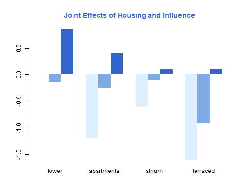
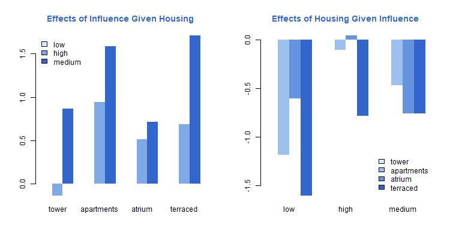

{% include r.css %}


<div id="c6s5" class="section level2 first">
<h2 class="first">6.5 Ordered Logit Models</h2>
<p>We now turn our attention to models for <em>ordered</em> categorical
outcomes. Obviously the multinomial and sequential logit models can be
applied as well, but they make no explicit use of the fact that the
categories are ordered. The models considered here are specifically
designed for ordered data.</p>
<div id="housing-conditions-in-copenhagen" class="section level3">
<h3>Housing Conditions in Copenhagen</h3>
<p>We will use data from 1681 residents of twelve areas in Copenhagen,
classified in terms of the type of housing that they have (tower blocks,
apartments, atrium houses and terraced houses), their feeling of
influence on apartment management (low, medium, high), their degree of
contact with the neighbors (low, high), and their satisfaction with
housing conditions (low, medium, high).</p>
<p>The data are available in the datasets section and can be read
directly from there.</p>
<pre class="r"><code>&gt; copen &lt;- read.table(&quot;https://grodri.github.io/datasets/copen.dat&quot;)
&gt; head(copen)</code></pre>
<pre><code>  housing influence contact satisfaction  n
1   tower       low     low          low 21
2   tower       low     low       medium 21
3   tower       low     low         high 28
4   tower       low    high          low 14
5   tower       low    high       medium 19
6   tower       low    high         high 37</code></pre>
<p>We will treat satisfaction as the outcome and type of housing,
feeling of influence and contact with the neighbors as categorical
predictors. The data are grouped as in the earlier example, but the
layout is long rather than wide. It corresponds to the way one would
enter individual data, with an additional colum n showing the number of
observations in each group.</p>
<p>It will be useful for comparison purposes to fit the saturated
multinomial logit model, where each of the 24 combinations of housing
type, influence and contact, has its own multinomial distribution. The
group code can easily be generated from the observation number, and the
easiest way to fit the model is to treat the code as a
<em>factor</em>.</p>
<pre class="r"><code>&gt; copen$group &lt;- rep(1:24,rep(3,24))
&gt; library(nnet)
&gt; msat &lt;- multinom(satisfaction~as.factor(group), weights=n, data=copen)</code></pre>
<pre><code># weights:  75 (48 variable)
initial  value 1846.767257 
iter  10 value 1723.705246
iter  20 value 1716.225889
iter  30 value 1715.715730
final  value 1715.710848 
converged</code></pre>
<pre class="r"><code>&gt; logLik(msat)</code></pre>
<pre><code>&#39;log Lik.&#39; -1715.711 (df=48)</code></pre>
<p>The log likelihood is -1715.7. You can verify that this is
sum(n*log(p)), where n are the counts and p the proportions for the
categories of satisfaction within each of the 24 groups.</p>
</div>
<div id="the-proportional-odds-model" class="section level3">
<h3>The Proportional Odds Model</h3>
<p>The next task is to fit the additive ordered logit model from Table
6.5 in the notes. I will use the <code>polr()</code> function in
Venables and Rilpey’s <code>MASS</code> package. Before fitting, I
relevel the predictors so the reference cells are tower residents, low
influence, and low contact. I also make sure the outcome categories are
ordered from low to high satisfaction.</p>
<pre class="r"><code>&gt; library(MASS)</code></pre>
<pre><code>Warning: package &#39;MASS&#39; was built under R version 4.2.2</code></pre>
<pre class="r"><code>&gt; library(dplyr)    </code></pre>
<pre><code>
Attaching package: &#39;dplyr&#39;</code></pre>
<pre><code>The following object is masked from &#39;package:MASS&#39;:

    select</code></pre>
<pre><code>The following objects are masked from &#39;package:stats&#39;:

    filter, lag</code></pre>
<pre><code>The following objects are masked from &#39;package:base&#39;:

    intersect, setdiff, setequal, union</code></pre>
<pre class="r"><code>&gt; copen &lt;- mutate(copen,  
+   satisfaction = ordered(satisfaction, levels=c(&quot;low&quot;,&quot;medium&quot;,&quot;high&quot;)),
+   housing = relevel(as.factor(housing), &quot;tower&quot;),
+   influence = relevel(as.factor(influence),&quot;low&quot;),
+   contact = relevel(as.factor(contact),&quot;low&quot;))
&gt; madd &lt;- polr(satisfaction ~ housing + influence + contact, 
+   weights=n, data=copen)
&gt; summary(madd)</code></pre>
<pre><code>
Re-fitting to get Hessian</code></pre>
<pre><code>Call:
polr(formula = satisfaction ~ housing + influence + contact, 
    data = copen, weights = n)

Coefficients:
                    Value Std. Error t value
housingapartments -0.5724    0.11924  -4.800
housingatrium     -0.3662    0.15517  -2.360
housingterraced   -1.0910    0.15149  -7.202
influencehigh      1.2888    0.12716  10.136
influencemedium    0.5664    0.10465   5.412
contacthigh        0.3603    0.09554   3.771

Intercepts:
            Value   Std. Error t value
low|medium  -0.4961  0.1248    -3.9739
medium|high  0.6907  0.1255     5.5049

Residual Deviance: 3479.149 
AIC: 3495.149 </code></pre>
<pre class="r"><code>&gt; logLik(madd)</code></pre>
<pre><code>&#39;log Lik.&#39; -1739.575 (df=8)</code></pre>
<pre class="r"><code>&gt; lrtest &lt;- function(small, large) {
+    data.frame(chisq=deviance(small)-deviance(large), df=large$edf-small$edf)
+ }
&gt; lrtest(madd, msat)</code></pre>
<pre><code>    chisq df
1 47.7276 40</code></pre>
<p>The log-likelihood is -1739.6, so the deviance for this model
compared to the saturated multinomial model is 47.7 on 40 d.f.
<code>polr()</code> calculates the deviance of this model as -2logL,
efectively comparing it to a saturated individual model. I prefer to
compare with a multinomial model which is saturated for the 24 groups,
which is why I calculate a difference in deviances, the same as twice a
difference in log likelihoods.</p>
<p>The bottom line is that the deviance is not much more than one would
expect when saving 40 parameters, so we have no evidence against the
additive model. To be thorough, however, we will explore individual
interactions just in case the deviance is concentrated on a few d.f.</p>
</div>
<div id="models-with-interactions" class="section level3">
<h3>Models with Interactions</h3>
<p>The next step is to explore two-factor interactions.</p>
<pre class="r"><code>&gt; mhi &lt;- polr(satisfaction ~ housing*influence + contact, weights=n, data=copen)
&gt; lrtest(mhi, msat)</code></pre>
<pre><code>     chisq df
1 25.21826 34</code></pre>
<pre class="r"><code>&gt; mhc &lt;- polr(satisfaction ~ housing*contact + influence, weights=n, data=copen)
&gt; lrtest(mhc, msat)</code></pre>
<pre><code>     chisq df
1 39.06145 37</code></pre>
<pre class="r"><code>&gt; mic &lt;- polr(satisfaction ~ housing + influence*contact, weights=n, data=copen)
&gt; lrtest(mic, msat)</code></pre>
<pre><code>     chisq df
1 47.51865 38</code></pre>
<p>The interaction between housing and influence reduces the deviance by
about half, at the expense of only six d.f., so it is worth a second
look. The interaction between housing and contact makes a much smaller
dent, and the interaction between influence and contact adds practically
nothing.</p>
<p>We could also compare each of these models to the additive model,
thus testing the interaction directly. We would get chisquareds of 22.51
on 6 d.f., 8.67 on 3 d.f. and 0.21 on 2 d.f. You can obtain these using
our handy <code>lrtest()</code> function, try for example
<code>lrtest(madd, mhi)</code>, which we’ll use below.</p>
<p>Clearly the interaction to add is the first one, allowing the
association between satisfaction with housing and a feeling of influence
on management, net of contact with neighbors, to depend on the type of
housing. <span class="stata">To examine parameter estimates we refit the
model:</span></p>
<pre class="r"><code>&gt; summary(mhi)</code></pre>
<pre><code>
Re-fitting to get Hessian</code></pre>
<pre><code>Call:
polr(formula = satisfaction ~ housing * influence + contact, 
    data = copen, weights = n)

Coefficients:
                                    Value Std. Error t value
housingapartments                 -1.1885    0.19724 -6.0256
housingatrium                     -0.6067    0.24457 -2.4808
housingterraced                   -1.6062    0.24100 -6.6650
influencehigh                      0.8689    0.27434  3.1671
influencemedium                   -0.1390    0.21255 -0.6541
contacthigh                        0.3721    0.09599  3.8764
housingapartments:influencehigh    0.7198    0.32873  2.1896
housingatrium:influencehigh       -0.1555    0.41048 -0.3789
housingterraced:influencehigh      0.8446    0.43027  1.9630
housingapartments:influencemedium  1.0809    0.26585  4.0657
housingatrium:influencemedium      0.6511    0.34500  1.8873
housingterraced:influencemedium    0.8210    0.33067  2.4829

Intercepts:
            Value   Std. Error t value
low|medium  -0.8882  0.1672    -5.3135
medium|high  0.3126  0.1657     1.8871

Residual Deviance: 3456.64 
AIC: 3484.64 </code></pre>
<pre class="r"><code>&gt; lrtest(mhi, msat)</code></pre>
<pre><code>     chisq df
1 25.21826 34</code></pre>
<pre class="r"><code>&gt; lrtest(madd, mhi)</code></pre>
<pre><code>     chisq df
1 22.50935  6</code></pre>
<p>The model deviance of 25.2 on 34 d.f. is not significant. To test for
the interaction effect we compare this model with the additive model,
obtaining a chi-squared statistic of 22.5 on six d.f., which is
significant at the 0.001 level.</p>
<p>At this point one might consider adding a second interaction. The
obvious choice is to allow the association between satisfaction and
contact with neighbors to depend on the type of housing. This would
reduce the deviance by 7.95 at the expense of three d.f., a gain that
just makes the conventional 5% cutoff with a p-value of 0.047. In the
interest of simplicity, however, we will not pursue this addition.</p>
</div>
<div id="interpretation-of-parameter-estimates" class="section level3">
<h3>Interpretation of Parameter Estimates</h3>
<p>The estimates indicate that respondents who have high contact with
their neighbors are more satisfied than respondents with low contact who
live in the same type of housing and have the same feeling of influence
on management. The difference is estimated as 0.372 units in the
underlying logistic scale. Dividing by the standard deviation of the
(standard) logistic distribution we obtain</p>
<pre class="r"><code>&gt; coef(mhi)[&quot;contacthigh&quot;]/(pi/sqrt(3))</code></pre>
<pre><code>contacthigh 
  0.2051395 </code></pre>
<p>So the difference in satisfaction between high and low contact with
neighbors, among respondents with the same housing and influence, is
0.205 standard deviations.</p>
<p>Alternatively, we can exponentiate the coefficient:</p>
<pre class="r"><code>&gt; exp(coef(mhi)[&quot;contacthigh&quot;])</code></pre>
<pre><code>contacthigh 
   1.450752 </code></pre>
<p>The odds of reporting high satisfaction (relative to medium or low),
are 45% higher among tenants who have high contact with the neighbors
than among tenants with low contact and have the same type of housing
and influence. The odds of reporting medium or high satisfaction (as
opposed to low) are also 45% higher in this comparison.</p>
<p>Interpretation of the effects of housing type and influence requires
taking into account the interaction effect. In the notes we describe
differences by housing type among those who feel they have little
influence in management, and the effects of influence in each type of
housing.</p>
<p>Let us do something a bit different here, and focus on the joint
effects of housing and influence, combining the main effects and
interactions. To do this I extract the linear predictor for each
combination of housing and influence, and create a matrix suitable for a
bar plot. I also divide the estimates by π/√3 to express them in
standard deviation units in a latent satisfaction scale.</p>
<pre class="r"><code>&gt; xb &lt;- model.matrix(mhi) %*% c(0,coef(mhi))
&gt; indices&lt;-(1:nrow(copen))[copen$satisfaction==&quot;low&quot; &amp; copen$contact==&quot;low&quot;]
&gt; XB &lt;- matrix(xb[indices],3,4)
&gt; colnames(XB) &lt;- levels(copen$housing)
&gt; rownames(XB) &lt;- levels(copen$influence)
&gt; trio &lt;- c(&quot;#ddeeff&quot;,&quot;#80aae6&quot;, &quot;#3366cc&quot;)
&gt; png(&quot;fig63r.png&quot;, width=500, height=400)
&gt; barplot(XB, beside=TRUE, col=trio, border=NA, 
+   main=&quot;Joint Effects of Housing and Influence&quot;, col.main=&quot;#3366cc&quot;)
&gt;  dev.off()</code></pre>
<pre><code>png 
  2 </code></pre>
<p></p>
<p>Satisfaction with housing conditions is highest for residents of
tower blocks who feel they have high influence, and lowest for residents
of terraced houses with low influence. Satisfaction increases with
influence in each type of housing, but the difference is largest for
terraced houses and apartments than fower blocks and atrium houses.</p>
<p>Another way to present the results is by focusing on the effects of
influence within each type of housing or, alternatively, on the effects
of housing type within each category of influence. All we need to do is
substract the values for the reference cell of the control variable.
These, of course, are in the first row or column of our matrix,</p>
<pre class="r"><code>&gt; quartet  &lt;- c(&quot;#ddeeff&quot;, &quot;#9dc1ee&quot;,&quot;#6593dd&quot;, &quot;#3366cc&quot;)
&gt; png(&quot;fig64r.png&quot;, width=750, height=400)
&gt; par(mfrow=c(1,2))
&gt; barplot(apply(XB,2,function(x)x-x[1]), beside=TRUE, col=trio, 
+   border=NA, main=&quot;Effects of Influence Given Housing&quot;, col.main=&quot;#3366cc&quot;)
&gt; legend(&quot;toplef&quot;, fill=trio, legend=levels(copen$influence), bty=&quot;n&quot;)
&gt; barplot(apply(XB, 1, function(x)x-x[1]), beside=TRUE, col=quartet, 
+   border=NA, main=&quot;Effects of Housing Given Influence&quot;, col.main=&quot;#3366cc&quot;)
&gt; legend(&quot;bottomright&quot;, fill=quartet, legend=levels(copen$housing), bty=&quot;n&quot;)
&gt; dev.off()</code></pre>
<pre><code>png 
  2 </code></pre>
<p></p>
<p>On the left panel we see more clearly the differences by influence in
each type of housing. As noted above, having influence is good,
particularly of you live in a terraced house or apartment. The right
panel shows differences by type of housing within categories of
influence. Tower residents are, generally speaking, more satisfied than
residents of other types of housing, and the differences tend to be
larger when influence is low.</p>
</div>
<div id="estimation-of-probabilities" class="section level3">
<h3>Estimation of Probabilities</h3>
<p>Let us consider predicted probabilities. The <code>predict()</code>
method can predict the outcome, with <code>type="class"</code> (the
default), or the probabilities, with <code>type="p"</code>. We’ll use
the latter.</p>
<pre class="r"><code>&gt; copen &lt;- mutate(copen, fitted=predict(mhi, type=&quot;p&quot;))</code></pre>
<p>We’ll look at these results for tower block dwellers with little
influence and with high and low contact with neighbors. The first of
these groups is, of course, the reference cell. I add the condition
‘satisfaction==“low”’ to list the probabilities just once for each
group:</p>
<pre class="r"><code>&gt; filter(copen, housing==&quot;tower&quot; &amp; influence==&quot;low&quot; &amp; satisfaction==&quot;low&quot;) |&gt;
+     select(housing, influence, contact, fitted)</code></pre>
<pre><code>  housing influence contact fitted.low fitted.medium fitted.high
1   tower       low     low  0.2914869     0.2860400   0.4224731
4   tower       low    high  0.2209299     0.2642112   0.5148588</code></pre>
<p>We see that among tower tenants with low influence, those with high
contact with their neighbors have a higher probability of high
satisfaction and a lower probability of medium or low satisfaction, than
those with low contact with the neighbors.</p>
<p>It is instructive to reproduce these calculations “by hand”. For the
reference cell all we need are the cutpoints. Remember that the model
predicts cumulative probabilities, which is why we difference the
results. We write a helper function to facilitate converting cumulative
logits to probabilities. The cutpoints or intercepts are stored in a
slot named <code>zeta</code>.</p>
<pre class="r"><code>&gt; xb2p &lt;- function(xb, cdf=plogis) { 
+   p &lt;- cdf(as.numeric(xb))
+   data.frame(low=p[1], medium=p[2]-p[1], high=1-p[2])
+ }
&gt; xb2p(mhi$zeta)</code></pre>
<pre><code>        low  medium      high
1 0.2914869 0.28604 0.4224731</code></pre>
<p>For the group with high contact we need to <em>subtract</em> the
corresponding coefficient from the cutpoints. The change of sign is
needed to convert coefficients from the latent variable to the
cumulative probability formulations (or from upper to lower tails).</p>
<pre class="r"><code>&gt; xb2p(mhi$zeta - coef(mhi)[&quot;contacthigh&quot;])</code></pre>
<pre><code>        low    medium      high
1 0.2209299 0.2642112 0.5148588</code></pre>
<p>Results agree exactly with the earlier predicted probabilities.</p>
</div>
<div id="the-ordered-probit-model" class="section level3">
<h3>The Ordered Probit Model</h3>
<p>We now consider ordered probit models, starting with the additive
model in Table 6.6:</p>
<pre class="r"><code>&gt; mpadd &lt;- polr(satisfaction  ~ housing + influence + contact, weights=n,
+   method=&quot;probit&quot;, data=copen)
&gt; summary(mpadd)</code></pre>
<pre><code>
Re-fitting to get Hessian</code></pre>
<pre><code>Call:
polr(formula = satisfaction ~ housing + influence + contact, 
    data = copen, weights = n, method = &quot;probit&quot;)

Coefficients:
                    Value Std. Error t value
housingapartments -0.3475    0.07229  -4.807
housingatrium     -0.2179    0.09477  -2.299
housingterraced   -0.6642    0.09180  -7.235
influencehigh      0.7829    0.07643  10.244
influencemedium    0.3464    0.06414   5.401
contacthigh        0.2224    0.05812   3.826

Intercepts:
            Value   Std. Error t value
low|medium  -0.2998  0.0762    -3.9371
medium|high  0.4267  0.0764     5.5850

Residual Deviance: 3479.689 
AIC: 3495.689 </code></pre>
<pre class="r"><code>&gt; logLik(mpadd)</code></pre>
<pre><code>&#39;log Lik.&#39; -1739.844 (df=8)</code></pre>
<pre class="r"><code>&gt; deviance(mpadd) - deviance(msat)</code></pre>
<pre><code>[1] 48.26715</code></pre>
<p>The model has a log-likelihood of -1739.8, a little bit below that of
the additive ordered logit. This is also reflected in the slightly
higher deviance.</p>
<p>Next we add the housing by influence interaction</p>
<pre class="r"><code>&gt; mphi &lt;- polr(satisfaction  ~ housing * influence + contact, weights=n,
+   method=&quot;probit&quot;, data=copen)
&gt;  summary(mphi)</code></pre>
<pre><code>
Re-fitting to get Hessian</code></pre>
<pre><code>Call:
polr(formula = satisfaction ~ housing * influence + contact, 
    data = copen, weights = n, method = &quot;probit&quot;)

Coefficients:
                                     Value Std. Error t value
housingapartments                 -0.72806    0.12050 -6.0419
housingatrium                     -0.37207    0.15103 -2.4636
housingterraced                   -0.97900    0.14559 -6.7245
influencehigh                      0.51646    0.16393  3.1504
influencemedium                   -0.08637    0.13033 -0.6627
contacthigh                        0.22846    0.05832  3.9176
housingapartments:influencehigh    0.44791    0.19707  2.2729
housingatrium:influencehigh       -0.07797    0.24965 -0.3123
housingterraced:influencehigh      0.52167    0.25873  2.0163
housingapartments:influencemedium  0.66001    0.16258  4.0596
housingatrium:influencemedium      0.41084    0.21338  1.9254
housingterraced:influencemedium    0.49638    0.20164  2.4617

Intercepts:
            Value   Std. Error t value
low|medium  -0.5440  0.1023    -5.3150
medium|high  0.1892  0.1018     1.8574

Residual Deviance: 3457.331 
AIC: 3485.331 </code></pre>
<pre class="r"><code>&gt; logLik(mphi)</code></pre>
<pre><code>&#39;log Lik.&#39; -1728.665 (df=14)</code></pre>
<pre class="r"><code>&gt; deviance(mphi) - deviance(msat)</code></pre>
<pre><code>[1] 25.90907</code></pre>
<pre class="r"><code>&gt; coef(mphi)[&quot;contacthigh&quot;]</code></pre>
<pre><code>contacthigh 
  0.2284566 </code></pre>
<p>We now have a log-likelihood of -1728.7 and a deviance of 25.9. which
is almost indistinguishable from the corresponding ordered logit
model.</p>
<p>The estimates indicate that tenants with high contact with the
neighbors are 0.228 standard deviations higher in the latent
satisfaction scale than tenants with low contact, who live in the same
type of housing and have the same feeling of influence in management.
Recall that the comparable logit estimate was 0.205.</p>
<p>The probabilities for the two groups compared earlier can be computed
using <code>predict()</code>, as before, or more instructively “by hand”
using our helper function with the normal c.d.f.</p>
<pre class="r"><code>&gt; xb2p(mphi$zeta, cdf=pnorm)</code></pre>
<pre><code>        low    medium      high
1 0.2932275 0.2817922 0.4249803</code></pre>
<pre class="r"><code>&gt; xb2p(mphi$zeta - coef(mphi)[&quot;contacthigh&quot;], cdf=pnorm)</code></pre>
<pre><code>        low    medium      high
1 0.2199278 0.2644026 0.5156696</code></pre>
<p>The main thing to note here is that the results are very close to the
corresponding predictions based on the ordered logit model.</p>
</div>
<div id="the-proportional-hazards-model" class="section level3">
<h3>The Proportional Hazards Model</h3>
<p>The third model mentioned in the lecture notes uses a complementary
log-log link and has a proportional hazards interpretation. The model
may be fit using <code>polr()</code> with <code>method="cloglog"</code>.
Details are left as an exercise. We will learn more about proportional
hazard models in the next chapter.</p>
<p><small>Updated fall 2022</small></p>
</div>
</div>
